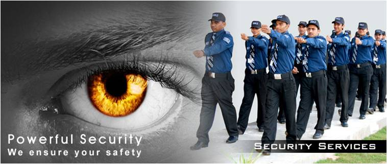

WHAT WE DO
Dogs Security

We have several breeds of dogs that are trained in intruder detection, searching, patrolling and handler protection. The working abilities of all our dogs are constantly assessed, and all of our dogs and handlers are trained and certified in accordance with the standards set out by the National Association of Security Dog Users (NASDU).
Manned Security
PK Security officers secure sites across Eastern Africa and are at the core of everything we do. We invest time in an intensive selection process, which includes in-depth background checks followed by extensive training in first aid, fire prevention, customer service and security-specific skills, all to ensure your facilities, assets, and people have the best security possible. Our security officer services include: Low-profile security officers, protecting assets while providing customer service Military-style security officers, controlling entrances and exits, monitoring security systems and patrolling sites High-profile security officers, maximizing the deterrent effect when reinforced security is needed Risk mitigation through a proactive security presence and effective response